3. 多変数関数の積分
ここから多変数関数の積分について紹介していこう. まずは $2$ 次元平面上の関数 $f(x, y)$ に対する積分を考え, その議論を $3$ 次元空間上の関数 $f(x, y, z)$ に対する積分に拡張することを目指す. 多変数関数に対しても, $1$ 変数の場合と同様にリーマン積分を考えることが可能であり, 結果的に $1$ 変数関数の積分と同様の性質を得ることができる.
以下の説明は, 一見すると複雑に感じるかもしれないが, $1$ 変数の場合と同様である, ということを念頭に理解して欲しい.
3.1: 曲線の長さと線積分
まずは $xy$ 平面上の関数に対する積分の一例として, 曲線の長さの計算を考えよう. ここでは, 曲線の長さもリーマン積分と同様にして導出するアイデアを紹介する.
$xy$ 平面上の滑らかな曲線 $C$ が, パラメータ $t$ を用いた表示 \[ x(t),\ y(t) \quad(a\le t\le b) \] により表されているとする, ここで $C$ が滑らかであることから $x(t)$, $y(t)$ は微分可能である. このとき, 区間 $[a, b]$ の分割 \[ a = t_0 \lt t_1 \lt \dots \lt t_{N-1} \lt t_N = b \] を考える, このとき $\Delta t_k = t_{k+1}-t_k$ であり, 分割のサイズは \[ \Delta t = \max_{k=0,\dots, N-1}\Delta t_k \] である. さて, 曲線上の点 \[ P_k = \begin{pmatrix} x(t_k) \cr y(t_k) \end{pmatrix} \] に対し, $P_k$ と $P_{k+1}$ の距離 $\Delta s_k$ について, 平均値の定理を用いることで \[ \begin{array}{rl} \Delta s_k &= \overline{P_kP_{k+1}} \cr &= \sqrt{(x(t_{k+1}) - x(t_k))^2 + (y(t_{k+1}) - y(t_k))^2} \cr &= \sqrt{\left(\dfrac{dx}{dt}(\xi_k)\right)^2 + \left(\dfrac{dy}{dt}(\eta_k)\right)^2} \Delta t_k \end{array} \] を満たす $\xi_k\in (t_k, t_{k+1})$, $\eta_k\in(t_k, t_{k+1})$ が存在する.
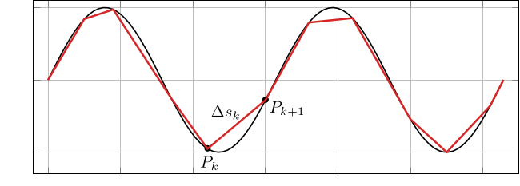
これを用いて, 点 $P_0, P_1, \dots, P_n$ を結んで得られる折れ線の長さは \[ \sum_{k=1}^{N-1}\Delta s_k = \sum_{k=1}^{N-1}\sqrt{\left(\dfrac{dx}{dt}(\xi_k)\right)^2 + \left(\dfrac{dy}{dt}(\eta_k)\right)^2} \Delta t_k \] と表されるため, これをリーマン和とみなして極限 \[ L = \int_a^b \sqrt{\left(\dfrac{dx}{dt}(t)\right)^2 + \left(\dfrac{dy}{dt}(t)\right)^2}~dt = \lim_{\Delta t\to0} \sum_{k=1}^{N-1}\sqrt{\left(\dfrac{dx}{dt}(\xi_k)\right)^2 + \left(\dfrac{dy}{dt}(\eta_k)\right)^2} \Delta t_k = \lim_{\Delta t\to0} \sum_{k=1}^{N-1}\Delta s_k \] を取ることで, 曲線 $C$ の長さ $L$ が得られる. このことは, 直感的には曲線の微小長さ $ds$ は \[ ds = \sqrt{(dx)^2 + (dy)^2} \] により与えられることから, \[ L = \int_a^b \dfrac{ds}{dt}~dt = \int_a^b \sqrt{\left(\dfrac{dx}{dt}(t)\right)^2 + \left(\dfrac{dy}{dt}(t)\right)^2}~dt \] と計算できる, ということを意味している.
ここでは上の積分に異なる表記を導入しよう. まず, 関数 $x(t)$, $y(t)$ を成分にもつベクトル \[ \mathbf{r}(t) = \begin{pmatrix} x(t) \cr y(t) \end{pmatrix} \] に対して, \[ \mathbf{r}'(t) = \begin{pmatrix} \dfrac{dx}{dt}(t) \cr \dfrac{dy}{dt}(t) \end{pmatrix},\qquad |\mathbf{r}'(t)| = \sqrt{\left(\dfrac{dx}{dt}(t)\right)^2 + \left(\dfrac{dy}{dt}(t)\right)^2} \] である, なお $\mathbf{r}(t)$ を用いると, 曲線 $C$ は \[ C = \{\mathbf{r}(t)\in\mathbb{R}^2: a\le t\le b\} \] と表すことができる. また, このとき $\mathbf{r}'(t)$ は曲線 $C$ の ($t$ における) 接ベクトル, $|\mathbf{r}'(t)|$ は 局所長 と呼ばれることがある. この表記を用いると, 曲線 $C$ の長さ $L$ を求める積分は \[ L = \int_a^b |\mathbf{r}'(t)|~dt \] と表すことができる. これと, 上の説明より, \[ L = \int_a^b\dfrac{ds}{dt}~dt = \int_a^b |\mathbf{r}'(t)|~dt \] であるが, これは \[ L = \int_{??} 1~ds \] という積分を計算する際に, 関数 $s = s(t)$ を用いて置換積分を用いていると解釈することができる. この積分の積分 "区間" は曲線 $C$ (の一部) である, と思うことができる. また, 被積分関数が定数関数 $1$ である場合には記述を省略してしまうことにしよう. 以上に基づき, 曲線 $C$ の長さを表す積分を \[ L = \int_C~ds = \int_a^b |\mathbf{r}'(t)|~dt \] と表記することにする. この積分において, $ds$ は 線素 と呼ばれることがある, また曲線 $C$ は上の積分における 積分路 と呼ばれることがある. さらに, 関数 $s(t)$ は $ds/dt = |\mathbf{r}'(t)|$ を満たすため, 微積分学の基本定理より \[ s(t) = \int_a^t \dfrac{ds}{du}~du = \int_a^t|\mathbf{r}'(u)|~du \] と表すことができるものである. 上で $\Delta s$ や $ds$ は微小な長さを表すものであったが, この $s(t)$ は曲線の $t=a$ から変数 $t$ で表される部分の長さを表す関数であり 弧長 と呼ばれる. 特に $s(a)=0$, $s(b) = L$ である.
ここまでの説明を定理としてまとめておこう:
滑らかな曲線 $C = \{\mathbf{r}(t)\in\mathbb{R}^2 : a\le t\le b\}$ の長さ $L$ は \[ L = \int_C~ds = \int_a^b |\mathbf{r}'(t)|~dt \] である.
この積分は曲線の長さを表すと同時に, 曲線 $C$ を積分路とした $1$ という定数関数の積分により表される面積 (高さが $1$ である曲面の面積) と対応付けることも可能である.
$y=\cosh x$ で表される曲線の $0\le x \le 1$ の部分の長さ $L$ を計算してみよう. この曲線は \[ \mathbf{r}(t) = \begin{pmatrix} x(t) \cr y(t) \end{pmatrix} = \begin{pmatrix} t \cr \cosh t \end{pmatrix} \qquad (0\le t\le 1) \] により表されるため, 求める長さ $L$ は \[ \begin{array}{rl} L &= \displaystyle\int_C ~ds \cr &= \displaystyle\int_0^1 |\mathbf{r}'(t)|~dt \cr &= \displaystyle\int_0^1 \sqrt{1+\sinh^2 t}~dt \cr &= \displaystyle\int_0^1 \cosh t ~dt \cr &= \left[\sinh t\right]_0^1 \cr &= \dfrac{e - e^{-1}}{2}. \end{array} \] この結果は, 下図左の曲線の一部の長さを表すと同時に, 下図右の (高さが $1$ である) 曲面の面積と対応付けることも可能である.
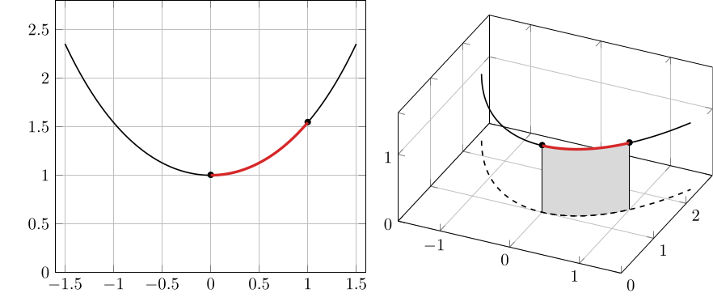
$a\gt0$ とする. このとき, \[ x^{2/3} + y^{2/3} = a^{2/3} \qquad (x, y\ge 0) \] により表される曲線 $C$ の長さ $L$ を求めよ.
$a\gt0$ および $x, y\ge 0$ に注意して, \[ x(\theta) = a\cos^3\theta,\quad y(\theta) = a\sin^3\theta\qquad (0\le\theta\le\pi/2) \] とおくと, \[ x^{2/3} + y^{2/3} = a^{2/3}(\cos^2\theta + \sin^2\theta) = a^{2/3} \] であることが確かめられるため, 曲線 $C$ のパラメータ表示として \[ C = \{\mathbf{r}(\theta): 0\le \theta\le \pi/2\},\quad \mathbf{r}(\theta) = \begin{pmatrix} a\cos^3\theta \cr a\sin^3\theta \end{pmatrix} \] が得られる. 従って, \[ \begin{array}{rl} L &= \displaystyle\int_C~ds \cr &= \displaystyle\int_0^{\pi/2} |\mathbf{r}'(\theta)|~d\theta \cr &= \displaystyle\int_0^{\pi/2} \sqrt{(-3a\cos^2\theta\sin\theta)^2 + (3a\sin^2\theta\cos\theta)^2}~d\theta \cr &= \displaystyle\int_0^{\pi/2} 3a\sin\theta\cos\theta~d\theta \cr &= \dfrac{3a}{2}\displaystyle\int_0^{\pi/2} \sin2\theta~d\theta \cr &= \dfrac{3a}{2}\left[-\dfrac{1}{2}\cos 2\theta\right]_0^{\pi/2} \cr &= \dfrac{3a}{2}. \end{array} \] もしくは $x=at^{3/2}$ とおくと \[ y = a(1-t)^{3/2} \] が得られることから \[ \begin{array}{rl} L &= \displaystyle\int_C~ds \cr &= \displaystyle\int_0^1 |\mathbf{r}'(t)|~dt \cr &= \displaystyle\int_0^1 \sqrt{\left(\dfrac{3}{2}at^{1/2}\right)^2 + \left(-\dfrac{3}{2}a(1-t)^{1/2}\right)^2}~dt \cr &= \dfrac{3a}{2}\displaystyle\int_0^1~dt \cr &= \dfrac{3a}{2} \end{array} \] と計算しても良い.
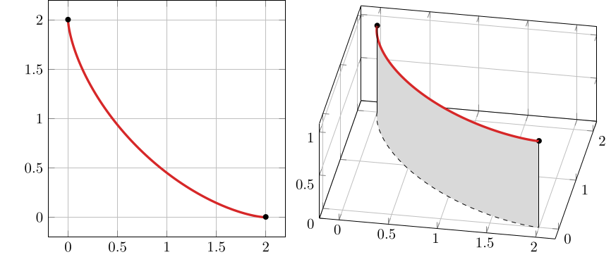
さて, 上のように曲線 $C$ 上で $1$ という定数関数を積分することができるが, 被積分関数は定数関数でなくとも構わない. 一般に, 曲線上で与えられた関数についての積分を 線積分 (line integral) という. 特にスカラー値関数の線積分は, やはり上のように曲面の面積と対応付けることで図形的な解釈も可能である (慣れてくると図形的な解釈はむしろ面倒なだけに感じるかもしれない):
滑らかな曲線 $C = \{\mathbf{r}(t) : a\le t\le b\}$ 上で定義された関数 $f(\mathbf{x})$ について, \[ \int_C f(\mathbf{x})~ds = \int_a^b f(\mathbf{r}(t))|\mathbf{r}'(t)|~dt \] を曲線 $C$ に沿った 線積分 (line integral) という.
- スカラー値関数の線積分において, $ds$ は (曲線の長さの計算と同様に) 曲線の微小長さであると解釈される. これに高さ $f(\mathbf{x})$ をかけて得られる ($xyz$ 空間上の) 長方形の面積の足し合わせが線積分のリーマン和に相当する近似を与える (下図左).
- $xy$ 平面上で, $a\le x\le b$, $y=0$ により与えられる曲線 ($x$ 軸上の線分) に沿った線積分は, $1$ 変数関数に対する通常の積分と一致する (下図右). この意味で, スカラー値関数の線積分と $1$ 変数関数の積分には共通性がある.
- 曲線 $C$ が $2$ つの曲線 $C_1$, $C_2$ に分割される場合は, \[ \int_C f(\mathbf{x})~ds = \int_{C_1} f(\mathbf{x})~ds + \int_{C_2} f(\mathbf{x})~ds \] が成立する ($1$ 変数関数の積分における積分区間の分割に相当する性質が成立する). また曲線 $C$ が閉曲線である場合, 閉曲線 $C$ に沿ったスカラー値関数の線積分を \[ \oint_C f(\mathbf{x})~ds \] と表記し, 閉路積分 もしくは 周回積分 と呼ぶことがある.
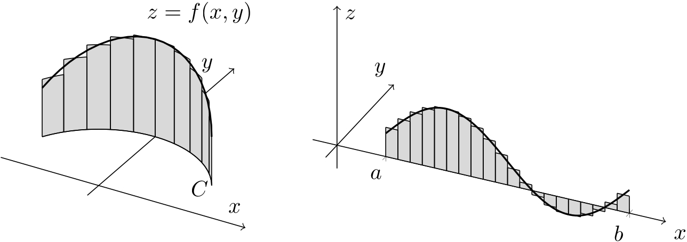
スカラー値関数の線積分の計算 (曲線の長さの計算も含む) は, 曲線のパラメータ表示の方法にも曲線の向きにも依存しない. このことを具体例を通じて見てみよう.
$0\lt a\lt b$ を満たす $2$ つの実数に対し, $xy$ 平面上の点 $\mathbf{x}_1 = (a, 0)$ を始点, $\mathbf{x}_2=(b, 0)$ を終点とする直線を $C$ とする. また, $\mathbf{x}_2$ を始点, $\mathbf{x}_1$ を終点とする直線を $-C$ と表記することにする. このとき $C$, $-C$ 上でのスカラー値関数の線積分は, 上の注意で述べたように通常の積分と一致する. 以下, $C$, $-C$ 上でのスカラー値関数 $f(x, y)$ に対し, $f$ の値が $y$ に依存しないことから \[ f(\mathbf{x}) = f(x, y) = f(x) \] のように表すことにしよう.
さて, ここでは
- $\mathbf{r}_1(t) = \begin{pmatrix} t \cr 0 \end{pmatrix} \quad(a\le t\le b)$,
- $\mathbf{r}_2(t) = \begin{pmatrix} t^2 \cr 0 \end{pmatrix} \quad(\sqrt{a}\le t\le \sqrt{b})$,
- $\mathbf{r}_3(t) = \begin{pmatrix} -t + a + b \cr 0 \end{pmatrix} \quad(a\le t\le b)$,
の $3$ つのパラメータ表示を考えてみよう. まず, 1. のパラメータ表示は直線 $C$ を表し, $|\mathbf{r}_1'(t)| = 1$ より \[ \int_C f(\mathbf{x})~ds = \int_a^b f(\mathbf{x}(\mathbf{r}_1)) |\mathbf{r}_1'|~dt = \int_a^b f(\mathbf{r}_1(t)) ~ dt = \int_a^b f(t)~dt \] となり, 確かに通常の積分と同じ式が得られる. 次に, 2. のパラメータ表示も直線 $C$ を表し, $|\mathbf{r}_2'(t)| = 2t$ より \[ \int_C f(\mathbf{x})~ds = \int_{\sqrt{a}}^{\sqrt{b}} f(\mathbf{r}_2(t)) 2t~dt = \int_{\sqrt{a}}^{\sqrt{b}} f(t^2) 2t~dt \] となるが, これは $1$ 変数関数の積分における置換積分に相当しており, 積分値は 1. と一致する. 最後に, 3. のパラメータ表示は ($t$ を大きくする際の始点と終点に注意すると) 直線 $-C$ を表す. そして $|\mathbf{r}_3'(t)| = 1$ であることから \[ \int_{-C} f(\mathbf{x})~ds = \int_a^b f(\mathbf{r}_3(t))~dt = \int_b^a -f(\widetilde{t})~d\widetilde{t} = \int_a^b f(\widetilde{t})~d\widetilde{t} \] が得られる, ただし $\widetilde{t} = -t+a+b$ である.
このように, パラメータ表示の違いは線積分の積分値に影響せず, また曲線の向きも影響しない. 上では $C$ が直線の場合のみ具体例として取り上げたが, 一般に向きづけられた曲線 $C$ に対し, 向きを逆にした曲線 $-C$ に対し, \[ \int_{-C}f(\mathbf{x})~ds = \int_Cf(\mathbf{x})~ds \] が成立する. つまりスカラー値関数に対する線積分では, $1$ 変数関数の積分における積分区間の反転に相当する性質が成立しない. ただし, ベクトル値関数の線積分 は曲線の向きに依存する. このことは, 後に改めて解説する.
$R\gt0$ とする. このとき, \[ \mathbf{r}(\theta) = \begin{pmatrix} R\cos \theta \cr R\sin \theta \end{pmatrix} \qquad (0\le \theta \le \pi) \] により表される曲線 $C$ に沿った \[ f(x, y) = x^2y \] の線積分を計算してみよう. 定義より \[ \begin{array}{rl} \displaystyle\int_C f(\mathbf{x})~ds &= \displaystyle\int_0^{\pi} f(\mathbf{r}(\theta))|\mathbf{r}'(\theta)|~d\theta \cr &= \displaystyle\int_0^{\pi} (R\cos\theta)^2(R\sin\theta)\sqrt{(-R\sin\theta)^2+(R\cos\theta)^2}~d\theta \cr &= \displaystyle\int_0^{\pi} R^4\cos^2\theta\sin\theta~d\theta \cr &= R^4\left[-\dfrac{1}{3}\cos^3\theta\right]_0^{\pi} \cr &= \dfrac{2}{3}R^4. \end{array} \] なお, この線積分は下図のグレーで表された曲面の面積を表していると解釈することもできる.
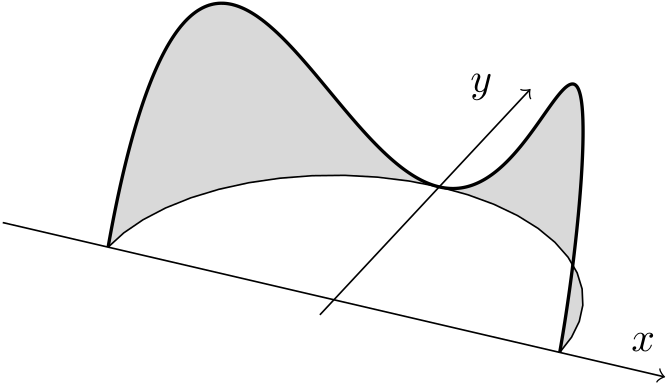
$a\gt 0$ とする. このとき, \[ y=x^2 \qquad (0\le x\le a) \] により表される曲線 $C$ に沿った \[ f(x, y) = \sqrt{y} \] の線積分を計算せよ.
曲線 $C$ は \[ \mathbf{r}(t) = \begin{pmatrix} x(t) \cr y(t) \end{pmatrix} = \begin{pmatrix} t \cr t^2 \end{pmatrix} \qquad (0\le t\le a) \] と表すことができるため, 線積分の定義より \[ \begin{array}{rl} \displaystyle\int_Cf(\mathbf{x})~ds &= \displaystyle\int_0^a f(\mathbf{x}(t))|\mathbf{r}'(t)|~dt \cr &= \displaystyle\int_0^a \sqrt{t^2}\sqrt{1+(2t)^2}~dt \cr &= \displaystyle\int_0^a t\sqrt{1+4t^2}~dt \cr &= \dfrac{1}{12}\left[(1+4t^2)^{3/2}\right]_0^a \cr &= \dfrac{1}{12}\left((1+4a^2)^{3/2} - 1\right). \end{array} \]
3.2: 重積分と逐次積分
上では, 多変数関数の積分の一例として, 曲線に沿った線積分について紹介した. 線積分の値を具体的に計算する際には, 曲線のパラメータ表示を用いて置換積分を行うことで, そのパラメータに関する ($1$ 変数関数の) 積分に帰着させることができた. 次に, 多変数関数を (面積を持った) 領域上で積分することを考えよう. もしも 積分領域 が簡単な形をしていれば, 実は多変数関数の積分は $1$ 変数関数の積分を複数回計算することに帰着させることができる. 最初にこのことを確認し, その後で多変数関数の積分における置換積分などの計算テクニックについて紹介する.
まず, $1$ 変数関数に対するリーマン積分では, 積分区間を分割することでリーマン和を導出し, その極限として積分の値を定めていた. 多変数関数に対しても, 同様に積分領域を分割することでリーマン和を導出し, その極限により積分値を定めることができる:
領域 \[ D = [a, b]\times [c, d] = \{(x, y) : a\le x\le b, c\le y\le d\} \] 上の $2$ 変数関数 $f(x, y)$ を考える. 区間 $[a, b]$ の分割 $x_0, \dots, x_N$ および区間 $[c, d]$ の分割 $y_0, \dots, y_M$ により, 長方形領域 $D$ を長方形領域 \[ D_{ij} = [x_i, x_{i+1}]\times [y_j, y_{j+1}] \] たちにより分割し, また各 $D_{ij}$ の面積を \[ \Delta D_{ij} = \Delta x_i\Delta y_j = (x_{i+1}-x_i)(y_{j+1}-y_j) \] と表す. このとき, $(p_{ij}, q_{ij})\in D_{ij}$ を満たす点 $(p_{ij}, q_{ij})$ に対し, 極限 \[ \lim_{\Delta D_{ij}\to0}\sum_{i=0}^{N-1}\sum_{j=0}^{M-1}f(p_{ij}, q_{ij})\Delta D_{ij} \] が存在するならば, 関数 $f$ は領域 $D$ 上で 二重積分可能 であるという. また, その極限を 二重積分 と呼び, \[ \iint_D f(x, y)~dxdy = \lim_{\Delta D_{ij}\to0}\sum_{i=0}^{N-1}\sum_{j=0}^{M-1}f(p_{ij}, q_{ij})\Delta D_{ij} \] と表記する.
以降, 上の定義における \[ \sum_{i=0}^{N-1}\sum_{j=0}^{M-1}f(p_{ij}, q_{ij})\Delta D_{ij} \left(= \sum_{i=0}^{N-1}\sum_{j=0}^{M-1}f(p_{ij}, q_{ij})\Delta x_i\Delta y_j\right) \] をリーマン和と呼ぶことにする. つまり, 二重積分も ($1$ 変数関数に対するリーマン積分と同様に) リーマン和の極限として定義される.
二重積分は, 図形的には関数のグラフと $xy$ 平面の間の立体の符号付き体積と関連付けることができる ($xy$ 平面より下側の部分の体積は負であるとみなす). まず, $f(p_{ij}, q_{ij})\Delta D_{ij}$ は, 高さが $f(p_{ij}, q_{ij})$, 底面積が $\Delta D_{ij}$ である直方体の体積と見なすことができる. これらの総和がリーマン和であり (下図右), 長方形領域 $D$ の分割を無限に細かくする極限を考えることで, 二重積分と体積との関連付けが得られる (下図左).
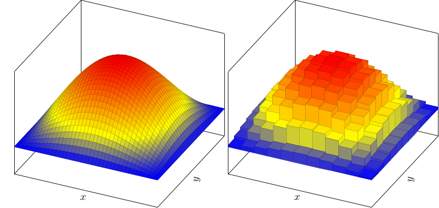
例として $D = [0, a]\times [0, b]$ 区間上の \[ f(x, y) = c \] という定数関数に対する二重積分を計算してみよう, ただし $a, b\gt 0$ とする. どんな $x, y$ に対しても $f(x, y) = c$ であることから \[ \begin{array}{rl} \displaystyle\iint_D f(x, y)~dxdy &= \displaystyle\lim_{\Delta D_{ij}\to 0}\sum_{i=0}^{N-1}\sum_{j=0}^{M-1}\underbrace{f(p_{ij}, q_{ij})}_{=c}\Delta D_{ij} \cr &= c\displaystyle\lim_{\Delta D_{ij}\to0 }|D| \cr &= c|D| \end{array} \] である, ただし $|D|=ab$ は長方形領域 $D$ の面積を表す. 定数関数の二重積分について \[ \iint_D c~dxdy = c|D| \] が成立することは, 底面積が $|D|$, 高さが $c$ である直方体の体積が $c|D|$ であることに対応している. また (被積分関数が $1$ である場合には記述を省略すると) 二重積分 \[ \iint_D ~dxdy \] は領域 $D$ の面積を表している. さらに, \[ \iint_D 0~dxdy = 0 \] も明らかである.
さて, 定義より二重積分は $1$ 変数関数のリーマン積分と同様の性質を満たすことがわかる. 例えば, 二重積分もリーマン和の和の極限として定義されることから, 線形性, 積分領域の分割および単調性が成立する:
- (線形性) \[ \iint_D (c_1f(x, y) + c_2g(x, y))~dxdy = c_1\iint_D f(x)~dxdy + c_2\iint_D g(x)~dxdy. \]
- (積分領域の分割) 領域 $D$ が境界以外に共通部分を持たない $2$ つの領域 $D_1$, $D_2$ に分割できるなら \[ \iint_D f(x, y)~dxdy = \iint_{D_1} f(x, y)~dxdy + \iint_{D_2} f(x, y)~dxdy. \]
- (単調性) 全ての $(x, y)\in D$ に対し $f(x, y)\le g(x, y)$ なら \[ \iint_D f(x, y)~dxdy \le \iint_D g(x, y)~dxdy \]
さらに $1$ 変数関数のリーマン積分について説明した際に, 連続関数や有限個の点で不連続である有界な関数は積分可能であることを説明したが, $2$ 重積分可能性についても同様のことが成立する. ここでは詳細は説明しないが, 実は $2$ 変数の連続関数や, 不連続となる部分の面積が $0$ であるような有界な関数は二重積分可能である. 従って, 多変数関数の不連続性が, ある曲線上で不連続であるという程度ならば問題なく二重積分可能である.
また, このことを利用すれば積分領域が長方形領域でない場合の二重積分を以下のように定義できる:
上で導入した領域 $D$ 上の関数 $\widetilde{f}(x, y)$ は, 一般には $D$ の境界部分 $\partial D$ で不連続な関数になるが, この程度の不連続性なら二重積分可能性への影響は無い. なお, このことから二重積分 \[ \iint_D ~dxdy \] は ($D$ が長方形領域でなくとも) 領域 $D$ の面積を表すことになる.
さて, 上のように一般の領域上で定義された $2$ 変数関数の二重積分の値が定義されるが, 定義に基づき積分値を計算することは難しい. ここから, 二重積分の値を計算するためのテクニックを紹介していこう.
まず, 長方形領域上の二重積分は, $1$ 変数関数に対するリーマン積分を $2$ 回計算することに帰着される. これを利用して二重積分を計算することを 逐次積分 と呼ぶことがある:
領域 $D = [a, b]\times [c, d]$ 上の $2$ 変数関数 $f(x, y)$ が $D$ 上で二重積分可能とする. このとき, \[ \iint_D f(x, y)~dxdy = \int_a^b\left(\int_c^d f(x, y)~dy\right)~dx = \int_c^d\left(\int_a^b f(x, y)~dx\right)~dy \] が成立する.
例えば \[ \iint_{[a, b]\times [c, d]} f(x, y)~dxdy = \int_a^b\left(\int_c^d f(x, y)~dy\right)~dx \] を計算する際には, まず ($x$ を一時的に定数とみなすことで) \[ A(x) = \int_c^d f(x, y)~dy \] を計算し, その後で \[ \iint_{[a, b]\times [c, d]} f(x, y)~dxdy = \int_a^b A(x) ~ dx \] を計算すればよい. ここで, $A(x)$ は各 $x\in[a, b]$ に対し (符号付き) 断面積を与える関数であるとみなせる.
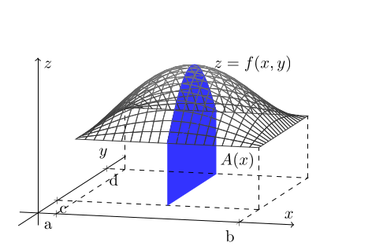
例として, 二重積分 \[ \int_{[a, b]\times [c, d]}x^2 y~dxdy \] を計算してみよう. 被積分関数は連続であるため二重積分可能であり, 従って例えば \[ \begin{array}{rl} \displaystyle\iint_{[a, b]\times[c, d]} x^2 y~dxdy &= \displaystyle\int_a^b\underbrace{\left(\int_c^d x^2 y~dy\right)}_{\text{$y$ についての積分}}~dx \cr &= \underbrace{\displaystyle\int_a^b\dfrac{d^2-c^2}{2}x^2~dx}_{\text{$x$ についての積分}} \cr &= \dfrac{(b^3-a^3)(d^2-c^2)}{6} \end{array} \] のように計算できる. 上では, $y$ についての積分を先に計算しているが, 順序を入れ替えて $x$ についての積分を先に計算しても良い.
さらに領域 $D$ について, $x$ の範囲が定数, $y$ の範囲が関数で与えられている場合, つまり \[ D = \{(x, y)\in\mathbb{R}^2 : a\le x\le b,\quad \varphi_1(x)\le y\le \varphi_2(x)\} \] のように表されている場合 (このような領域を $x$ 単純領域 と呼ぶことがある), $D\subset \widetilde{D}$ を満たす長方形領域 $\widetilde{D}$ を $\widetilde{D} = [a, b]\times[c, d]$ のように取り, さらに $\widetilde{D}$ 上の関数 $\widetilde{f}$ を適切に定めることで, \[ \begin{array}{rl} \displaystyle\iint_D f(x, y)~dxdy &= \displaystyle\iint_{\widetilde{D}}\widetilde{f}(x, y)~dxdy \cr &= \displaystyle\int_a^b \left(\int_c^d\widetilde{f}(x, y)~dy\right)~dx \cr &= \displaystyle\int_a^b \left(\int_{\varphi_1(x)}^{\varphi_2(x)}f(x, y)~dy\right)~dx \end{array} \] のように逐次積分が可能である. もしくは $y$ の範囲が定数, $x$ の範囲が関数で与えられている場合 ($D$ が $y$ 単純領域 である場合) も同様に逐次積分することができる:
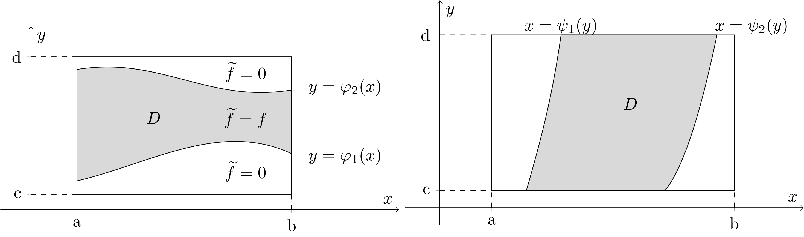
- 二つの連続な関数 $\varphi_1(x)$, $\varphi_2(x)$ が, \[ \varphi_1(x) \le \varphi_2(x) \quad\text{for all}\quad a\le x\le b \] を満たすとする. このとき, 領域 \[ D = \{(x, y)\in\mathbb{R}^2 : a\le x\le b,\quad \varphi_1(x)\le y\le \varphi_2(x)\} \] 上の関数 $f(x, y)$ が二重積分可能ならば, \[ \iint_D f(x, y)~dxdy = \int_a^b \left(\int_{\varphi_1(x)}^{\varphi_2(x)} f(x, y)~dy\right)~dx \] が成立する.
- 二つの連続な関数 $\psi_1(y)$, $\psi_2(y)$ が, \[ \psi_1(y) \le \psi_2(y) \quad\text{for all}\quad c\le y\le d \] を満たすとする. このとき, 領域 \[ D = \{(x, y)\in\mathbb{R}^2 : \psi_1(y)\le x\le \psi_2(y),\quad c\le y\le d\} \] 上の関数 $f(x, y)$ が二重積分可能ならば, \[ \iint_D f(x, y)~dxdy = \int_c^d \left(\int_{\psi_1(y)}^{\psi_2(y)} f(x, y)~dx\right)~dy \] が成立する.
領域 $D$ が二つの連続な関数 $\varphi_1(x)\le \varphi_2(x)$ を用いて \[ D = \{(x, y)\in\mathbb{R}^2 : a\le x\le b,\quad \varphi_1(x)\le y\le \varphi_2(x)\} \] と表されるとき, 領域 $D$ の面積 $|D|$ を計算してみよう. これは \[ |D| = \int_a^b (\varphi_2(x) - \varphi_1(x))~dx \] という一変数関数の積分だと思って計算することもできるが, 二重積分を用いて \[ |D| = \iint_D ~dxdy = \int_a^b\left(\int_{\varphi_1(x)}^{\varphi_2(x)}~dy\right)~dx = \int_a^b (\varphi_2(x) - \varphi_1(x))~dx \] と計算しても同じことである.
領域 $D$ が \[ D = \{(x, y)\in\mathbb{R}^2 : 0\le x\le 2,\quad x^2\le y\le 2x\} \] と表される $x$ 単純領域である場合に, 二重積分 \[ \iint_D xy~dxdy \] を計算してみよう. 上の定理より \[ \begin{array}{rl} \displaystyle\iint_D xy~dxdy &= \displaystyle\int_0^2\left(\int_{x^2}^{2x}xy~dy\right)~dx \cr &= \displaystyle\int_0^2 \dfrac{x((2x)^2 - (x^2)^2)}{2}~dx \cr &= \displaystyle\int_0^2 \dfrac{4x^3 - x^5}{2}~dx \cr &= \dfrac{16 - 64/6}{2} = \dfrac{16}{3}. \end{array} \] なお, この問題については, (必要なら図示することで) 積分領域の形状から \[ \begin{array}{rl} D &= \{(x, y)\in\mathbb{R}^2 : 0\le x\le 2,\quad x^2\le y\le 2x\} \cr &= \{(x, y)\in\mathbb{R}^2 : y/2\le x\le \sqrt{y},\quad 0\le y\le 4\} \cr \end{array} \] であることがわかるため, \[ \begin{array}{rl} \displaystyle\iint_D xy~dxdy &= \displaystyle\int_0^4\left(\int_{y/2}^{\sqrt{y}}xy~dx\right)~dy \cr &= \displaystyle\int_0^4 \dfrac{((\sqrt{y})^2 - (y/2)^2)y}{2}~dy \cr &= \displaystyle\int_0^4 \dfrac{y - y^2/4}{2}~dy \cr &= \dfrac{16/2 - 64/12}{2} = \dfrac{16}{3}. \end{array} \] と計算しても良い.
領域 $D$ が \[ D = \{(x, y)\in\mathbb{R}^2 : x^2\le y\le \sqrt{x}\} \] と表されるとき, 積分 \[ \iint_D (x^2+y)~dxdy \] を求めよ.
まず, $\sqrt{x}$ が実数となるためには $x\ge0$ でなければならない. さらに, $x^2\le \sqrt{x}$ が成立するのは $0\le x\le 1$ のときのみである. 従って, \[ \begin{array}{rl} \displaystyle\iint_D (x^2+y)~dxdy &= \displaystyle\int_0^1\left(\int_{x^2}^{\sqrt{x}}(x^2+y)~dy\right)~dx \cr &= \displaystyle\int_0^1 \left(x^2(\sqrt{x} - x^2) + \dfrac{(\sqrt{x})^2 - (x^2)^2}{2}\right)~dx \cr &= \dfrac{2}{7} - \dfrac{1}{5} + \dfrac{1}{4} - \dfrac{1}{10} = \dfrac{33}{140}. \end{array} \]
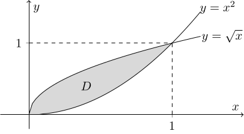
さて, ここまでに二重積分の定義と性質について紹介したが, 一般には $n$ 重積分 \[ \int\dots\int_D f(\mathbf{x})~dx_1\dots dx_n \] を考えることが可能である. 例えば $xyz$ 空間上の領域 $D$ 上の関数 $f(x, y, z)$ について, 三重積分は \[ \iiint_D f(x, y, z)~dxdydz \] と表記される. 特に三重積分については (二重積分と同様のため詳細な説明は述べないが) 計算例をいくつか確認しておこう:
領域 $D\subset\mathbb{R}^3$ の体積は \[ \iiint_D ~dxdydz \] である.
直方体領域 \[ D = [a_1, b_1]\times [a_2, b_2]\times [a_3, b_3] \] 上の関数 $f(x, y, z) = xyz$ に対する三重積分は, 例えば \[ \begin{array}{rl} \displaystyle\iiint_{[a_1, b_1]\times[a_2, b_2]\times [a_3, b_3]} xyz~dxdydz &= \displaystyle\iint_{[a_1, b_1]\times [a_2, b_2]}\left(\int_{a_3}^{b_3} xyz~dz\right)~dxdy \cr &= \displaystyle\iint_{[a_1, b_1]\times [a_2, b_2]}\dfrac{b_3^2-a_3^2}{2}xy~dxdy \cr &= \dfrac{(b_1^2-a_1^2)(b_2^2-a_2^2)(b_3^2-a_3^2)}{8} \end{array} \] のように逐次積分により計算できる.
領域 $D$ が \[ D = \{(x, y, z)\in\mathbb{R}^3 : 0\le x\le 1,\quad 0\le y\le 1-x,\quad 0\le z\le 1-x-y\} \] と表されるとき, 積分 \[ \iiint_D z~dxdydz \] を計算してみよう. 二重積分のときと同様に \[ \begin{array}{rl} \displaystyle\iiint_D z~dxdydz &= \displaystyle\int_0^1\left(\int_0^{1-x}\left(\int_0^{1-x-y} z~dz\right)~dy\right)~dx \cr &= \displaystyle\int_0^1\left(\int_0^{1-x}\left(\dfrac{(1-x-y)^2}{2}\right)~dy\right)~dx \cr &= \dfrac{1}{2}\displaystyle\int_0^1\left(\int_0^{1-x}\left((1-x)^2 - 2(1-x)y + y^2\right)~dy\right)~dx \cr &= \dfrac{1}{2}\displaystyle\int_0^1\left(\dfrac{1}{3}(1-x)^3\right)~dx \cr &= \dfrac{1}{24} \end{array} \] のように逐次積分により計算できる.
領域 \[ D = \{(x, y, z)\in\mathbb{R}^3: x\ge0,\quad y\ge0,\quad 0\le z\le 1-(x+y)^n\} \] の体積 $|D|$ を求めよ.
例えば $y$ に注目すると, $x, y\ge0$ において $0\le 1-(x+y)^n$ となるためには, $0\le x\le 1$ を満たす各 $x$ に対し $0\le y\le 1-x$ でなければならない. 従って, \[ |D| = \iiint_D~dxdydz = \int_0^1\left(\int_0^{1-x}\left(\int_0^{1-(x+y)^n}~dz\right)~dy\right)~dx \] を計算すればよい (もしくはグラフをプロットするなどして, $xy$ 平面上の $3$ 点 $(0,0)$, $(1,0)$, $(0,1)$ を頂点とする三角形 $K$ に対し \[ |D| = \iint_K 1-(x+y)^n~dxdy = \int_0^1\left(\int_0^{1-x}1-(x+y)^n~dy\right)~dx \] であると思っても良いだろう). 上の逐次積分を計算する際には, $t=x+y$ と変数変換すると良いだろう: \[ \begin{array}{rl} |D| &= \displaystyle\int_0^1\left(\int_0^{1-x}1-(x+y)^n~dy\right)~dx \cr &= \displaystyle\int_0^1\left(\int_x^1 1-t^n~dt\right)~dx \cr &= \displaystyle\int_0^1 1-x-\dfrac{1}{n+1}(1-x^{n+1})~dx \cr &= 1-\dfrac{1}{2} - \dfrac{1}{n+1}\left(1-\dfrac{1}{n+2}\right) \cr &= \dfrac{1}{2} - \dfrac{1}{n+2} \cr &= \dfrac{n}{2(n+2)}. \end{array} \]
領域 $\Omega\subset\mathbb{R}^n$ 上で定義された $n$ 変数関数 $f(x_1, x_2, \dots, x_n)$ に対する $n$ 重積分を, 単に \[ \int_{\Omega} f(x)~dx \] と表記することもある (厳密にはこれは ルベーグ積分 だが, 適切な被積分関数に対しリーマン積分とルベーグ積分は一致するため, 区別することなく上の表記が用いられているように思われる). この表記は簡単であり, また $n$ に依らず成立する性質を説明する際に便利であるという利点はあるが, この資料では使用しないことにする.
3.3: 重積分の置換積分
ここでは, 重積分に対する置換積分について説明しよう.
まず, $1$ 変数の場合の置換積分を思い出しておこう, ただし, 以降の議論と関連付けるために, 以前とは異なる記号を用いる. 関数 $f(x)$ について, $x$ がパラメータ $u$ を変数とする $C^1$ 級関数であり (つまり $x = x(u)$ と表すことができ), $x$ の値と $u$ の値が $1$ 対 $1$ に対応しているとする. このとき, $u$ についての区間 $\widehat{I} = [a, b]$ と, 対応する $x$ についての区間 $I=[x(a), x(b)]$ について, 置換積分は \[ \int_I f(x)~dx = \int_{\widehat{I}}f(x(u)) \dfrac{dx}{du}~du \] と表される. ここで $dx$ は $x$ に関する微小長さ, $du$ は $u$ に関する微小長さであり, それぞれリーマン和を考える際の区間分割幅 $\Delta x_k$, $\Delta u_k$ に相当するものである. そして $dx/du$ は微小長さの間のスケールの違いを表すものであり, リーマン和においては $\Delta x_k$ と $\Delta u_k$ を適切に対応させた際の長さの比であると解釈することができる.
例えば $x(u)=2u$ である場合を考えてみよう. このとき, $dx/du=2$ であり, 置換積分により \[ \int_{2a}^{2b} f(x)~dx = \int_a^b f(x(u))\dfrac{dx}{du}~du = \int_a^b 2f(2u)~du \] が成立するが, ここでは上の等号をリーマン和に基づいて解釈してみよう.
まず, $u$ に関する積分をリーマン和の極限として表すと, 区間 $[a, b]$ の分割 \[ a = u_0 \lt u_1 \lt \dots\lt u_{N-1} \lt u_N = b \] に基づき \[ \int_a^b f(x(u))\dfrac{dx}{du}~du = \lim_{\Delta u\to0} \sum_{k=0}^{N-1}f(x(s_k))\dfrac{dx}{du}\Delta u_k \] のように表すことができる, ただし $s_k$ は $u_k\le s_k\le u_{k+1}$ を満たすような点である. 次に, $x$ に関する積分をリーマン和の極限として表したいが, ここでは $\Delta x_k = dx/du \Delta u_k = 2\Delta u_k$ を満たすような区間分割を考えたとしよう. このとき, \[ 2a = x_0 \lt x_1 \lt \dots \lt x_{N-1} \lt x_N = 2b \] であり, また $\Delta u\to 0$ という極限と $\Delta x\to0$ という極限は等しい. さらに, $x(s_k) = 2s_k$ を $t_k$ と表すことにすると, $x_k\le t_k\le x_{k+1}$ が満たされるため \[ \begin{array}{rl} \displaystyle\int_a^b f(x(u))\dfrac{dx}{du}~du &= \displaystyle\lim_{\Delta u\to 0}\sum_{k=0}^{N-1}f(x(s_k))\dfrac{dx}{du}\Delta u_k \cr &= \displaystyle\lim_{\Delta x\to 0}\sum_{k=0}^{N-1}f(t_k)\Delta x_k \cr &= \displaystyle\int_{2a}^{2b} f(x)~dx \end{array} \] と式変形できることがわかる.
つまり, $1$ 変数関数についての置換積分は, \[ \Delta x_k = \dfrac{dx}{du}\Delta u_k \] が満たされるような $2$ つのリーマン和を考えると, それらの極限が等しくなる, ということを意味している.
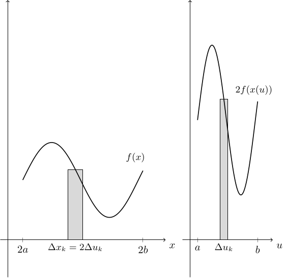
さて, 実は二重積分についても同様のことが成立する: 関数 $f(x, y)$ について, $x$, $y$ がパラメータ $u, v$ を変数とする $C^1$ 級関数であり (つまり $x=x(u, v)$, $y=y(u,v)$ と表すことができ), $xy$ 平面上の点 $(x, y)$ と $uv$ 平面上の点 $(u,v)$ が $1$ 対 $1$ に対応しているとする. このとき, $(u, v)$ についての領域 $\widehat{D}$ と, 対応する $(x, y)$ についての領域 $D$ について, スケールを調整する $S$ を適切に定めることで, 二重積分に対する置換積分を \[ \iint_D f(x, y)~dxdy = \iint_{\widehat{D}} f(x(u, v), y(u, v)) S~dudv \] と表すことができる.
例えば $x=2u$, $y=2/3v$ である場合を考えてみると, 長方形領域上の置換積分は (逐次積分を用いることで) \[ \begin{array}{rl} \displaystyle\iint_{[a, b]\times[c, d]} f(x, y)~dxdy &= \displaystyle\int_a^b\left(\int_c^d f(x, y)~dy\right)~dx \cr &= \displaystyle\int_a^b\left(\int_{3c/2}^{3d/2} f(x, y(v))\underbrace{\dfrac{dy}{dv}}_{=2/3}~dv\right)~dx \cr &= \displaystyle\int_{a/2}^{b/2}\left(\int_{3c/2}^{3d/2} f(x(u), y(v))\dfrac{dy}{dv}~dv\right)\underbrace{\dfrac{dx}{du}}_{=2}~du \cr &= \displaystyle\iint_{[a/2, b/2]\times [3c/2, 3d/2]} f(x(u), y(v)) \underbrace{\dfrac{dx}{du}\dfrac{dy}{dv}}_{=4/3} ~ dudv \end{array} \] となるため, $S = dx/du \cdot dy/dv = 4/3$ と定めてスケールを調整すれば置換積分の等号が成立する.
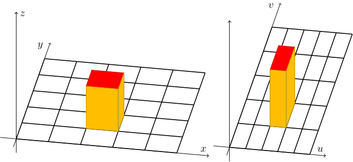
上の例は非常に簡単な場合を考えたため, 逐次積分を利用することで $1$ 変数関数の積分に対する置換積分に帰着させて式変形することができたが, 一般にはここまで単純では無い. ここから $x$, $y$ がどちらも $u$, $v$ の両方に依存している場合を含む, 一般的な状況を考えたい. ただし, ここでは厳密な説明の代わりに, 直感的かつ図形的な説明に終始することにする.
まず, $u$, $v$ に関する二重積分をリーマン和の極限として表すことで, \[ \iint_{\widehat{D}} f(x(u, v), y(u, v))S~dudv = \lim_{\Delta\widehat{D}_{ij}\to 0}\sum_{i=0}^{N-1}\sum_{j=0}^{M-1}f(x(r_{ij}, s_{ij}), y(r_{ij}, s_{ij}))S\Delta\widehat{D}_{ij} \] のように表すことができる, ここで $\Delta \widehat{D}_{ij} = \Delta u_i\Delta v_j$ は長方形領域 $\widehat{D}_{ij} = [u_i, u_{i+1}]\times [v_j, v_{j+1}]$ の面積であり, $(r_{ij}, s_{ij})$ は長方形領域 $\widehat{D}_{ij}$ 内の点である. さて, $p_{ij} = x(r_{ij}, s_{ij})$, $q_{ij} = y(r_{ij}, s_{ij})$ とおくことで, 上のリーマン和の極限を $xy$ 平面上の二重積分に対するリーマン和と対応付けたい. そのために, \[ D_{ij} = \{(x(u, v), y(u, v))\in\mathbb{R}^2 : (u,v) \in \widehat{D}_{ij}\} \] とおくと, $(p_{ij}, q_{ij})$ は領域 $D_{ij}$ 内の点となるため, その面積 $\Delta D_{ij}$ を用いて \[ \iint_{D} f(x, y)~dxdy = \lim_{\Delta D_{ij}\to 0}\sum_{i=0}^{N-1}\sum_{j=0}^{M-1}f(p_{ij}, q_{ij})\Delta D_{ij} \] とできるだろう. 以上より, $S$ を各 $i, j$ に対して \[ \Delta D_{ij} = S\Delta \widehat{D}_{ij} \] が満たされるように設定すれば, \[ \begin{array}{rl} \displaystyle \iint_{D} f(x, y)~dxdy &= \displaystyle\lim_{\Delta D_{ij}\to 0}\sum_{i=0}^{N-1}\sum_{j=0}^{M-1}f(p_{ij}, q_{ij})\Delta D_{ij} \cr &= \displaystyle \lim_{\Delta\widehat{D}_{ij}\to 0}\sum_{i=0}^{N-1}\sum_{j=0}^{M-1}f(x(r_{ij}, s_{ij}), y(r_{ij}, s_{ij}))S\Delta\widehat{D}_{ij} \cr &= \displaystyle \iint_{\widehat{D}} f(x(u, v), y(u, v))S~dudv \end{array} \] という置換積分が得られると期待される.
あとは \[ S = \dfrac{\Delta D_{ij}}{\Delta \widehat{D}_{ij}} \] を求めれば重積分に対する置換積分の公式が得られそうだが, その前に注意しておくと上のように構成した $D_{ij}$ は一般には長方形領域にはならない (下図). そのため上の式変形には粗があるのだが, ここでは気にせず話を進めてしまうことにする. 記号の簡単のために, \[ x(u_i, v_j) = x_{ij}, \quad y(u_i, v_j) = y_{ij} \] などと表記することにすると, もしも $\Delta u_i$, $\Delta v_j$ が十分小さければ, 領域 $D_{ij}$ はおおよそ \[ A: (x_{ij}, y_{ij}),\quad B: (x_{i+1, j}, y_{i+1, j}),\quad C: (x_{i+1, j+1}, y_{i+1, j+1}),\quad D: (x_{i, j+1}, y_{i, j+1}) \] を頂点とする $xy$ 平面上の四角形領域と思えるだろう.
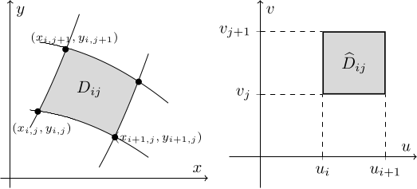
ここでは, さらに $D_{ij}$ がおおよそ平行四辺形だろうとみなして面積 $\Delta D_{ij}$ を計算しよう. いま, $\Delta u_i$, $\Delta v_j$ が十分小さいため, テイラーの定理を用いることで \[ \begin{array}{rl} x_{i+1, j} - x_{i, j} &= x(u_{i+1}, v_j) - x(u_i, v_j) \cr &= x(u_i + \Delta u_i, v_j) - x(u_i, v_j) \cr &\approx \dfrac{\partial x}{\partial u}(u_i, v_j)\Delta u_i \end{array} \] などの近似が可能である. さらなる記号の簡単のために, これらを \[ x_{i+1, j} - x_{i, j} \approx x_u\Delta u_i \] などと表記することにすると, \[ \begin{array}{rl} \Delta D_{ij} &\approx \sqrt{|\vec{AB}|^2|\vec{AC}|^2 - (\vec{AB}\cdot\vec{AC})^2} \cr &\approx \sqrt{\left(\left(x_u\Delta u_i\right)^2+\left(y_u\Delta u_i\right)^2\right)\left(\left(x_v\Delta v_j\right)^2+\left(y_v\Delta v_j\right)^2\right) - \left(x_ux_v\Delta u_i\Delta v_j + y_uy_v\Delta u_i\Delta v_j\right)^2} \cr &= \sqrt{(x_vy_u - x_uy_v)^2(\Delta u_i\Delta v_j)^2} \cr &= |x_vy_u - x_uy_v| \Delta \widehat{D}_{ij} \end{array} \] が得られる. これに基づき, $S = |x_vy_u - x_uy_v|$ とすることで, 実は二重積分に対する置換積分の公式が得られる: \[ \iint_D f(x, y)~dxdy = \iint_{\widehat{D}} f(x(u, v), y(u, v)) |x_vy_u - x_uy_v|~dudv. \]
ところで, $2$ 変数のベクトル値関数 $\mathbf{x}(u, v) = (x(u, v), y(u, v))$ に対して, \[ J(u, v) = \begin{pmatrix} \dfrac{\partial x}{\partial u} & \dfrac{\partial x}{\partial v} \cr \dfrac{\partial y}{\partial u} & \dfrac{\partial y}{\partial v} \end{pmatrix} = \begin{pmatrix} x_u & x_v \cr y_u & y_v \end{pmatrix} \] を ヤコビ行列 (Jacobian matrix), もしくは単に ヤコビアン (Jacobian) と呼び, その行列式 \[ \det J(u, v) = \dfrac{\partial x}{\partial u}\dfrac{\partial y}{\partial v} - \dfrac{\partial x}{\partial v}\dfrac{\partial y}{\partial u} = x_uy_v - x_vy_u \] を ヤコビ行列式 (Jacobian determinant) という (もしくはこちらをヤコビアンと呼ぶこともある). これを用いると, 二重積分に対する置換積分の公式は \[ \iint_D f(x, y)~dxdy = \iint_{\widehat{D}} f(x(u, v), y(u, v)) |\det J(u, v)|~dudv \] と表すことができる.
詳細は説明しないが, 実は $n$ 重積分に対する置換積分において, このヤコビ行列式によるスケール調整が本質的に重要となる:
$n$ 変数関数 $f(\mathbf{x})$ について, $\mathbf{x}\in\mathbb{R}^n$ が パラメータ $\mathbf{u}\in\mathbb{R}^n$ を変数とする $C^1$ 級関数であり, $n$ 次元空間上の点 $\mathbf{x}(\mathbf{u})$ と 点 $\mathbf{u}$ が $1$ 対 $1$ に対応しているとする. このとき, $\mathbf{u}$ についての領域 $\widehat{D}$ と, 対応する $\mathbf{x}$ についての領域 $D$ について, \[ \int\dots\int_D f(\mathbf{x})~dx_1\dots dx_n = \int\dots\int_{\widehat{D}} f(\mathbf{x}(\mathbf{u})) |\det J(\mathbf{u})|~du_1\dots du_n \] が成立する, ただし \[ J(\mathbf{u}) = \begin{pmatrix} \dfrac{\partial x_1}{\partial u_1} & \dfrac{\partial x_1}{\partial u_2} &\dots & \dfrac{\partial x_1}{\partial u_n} \cr \dfrac{\partial x_2}{\partial u_1} & \dfrac{\partial x_2}{\partial u_2} &\dots & \dfrac{\partial x_2}{\partial u_n} \cr \vdots & \vdots & \ddots & \vdots \cr \dfrac{\partial x_n}{\partial u_1} & \dfrac{\partial x_n}{\partial u_2} &\dots & \dfrac{\partial x_n}{\partial u_n} \end{pmatrix} \in\mathbb{R}^{n\times n} \] は $n$ 変数ベクトル値関数 \[ \mathbf{x}(\mathbf{u}) = \begin{pmatrix} x_1(u_1, u_2, \dots, u_n)\cr x_2(u_1, u_2, \dots, u_n)\cr \vdots \cr x_n(u_1, u_2, \dots, u_n) \end{pmatrix} \in\mathbb{R}^n \] に対するヤコビ行列である.
以前の例で, $x=2u$, $y=2/3v$ である場合に, 長方形領域上の置換積分が (逐次積分を用いることで) \[ \iint_{[a, b]\times[c, d]} f(x, y)~dxdy = \iint_{[a/2, b/2]\times [3c/2, 3d/2]} f(x(u), y(v)) \underbrace{\dfrac{dx}{du}}_{=2}\underbrace{\dfrac{dy}{dv}}_{=2/3} ~ dudv \] となることを確認した. これと同じ式は, ($x$ は $v$ に依存せず, $y$ は $u$ に依存しないことから) \[ |\det J(u, v)| = \left|\det\begin{pmatrix} \dfrac{dx}{du} & 0 \cr 0 & \dfrac{dy}{dv} \end{pmatrix}\right| = \dfrac{4}{3} \] であることに注目すると, 重積分に対する置換積分の公式から得ることができる.
領域 $D$ が \[ D = \{(x, y)\in\mathbb{R}^2 : x^2+y^2 \le R^2\} \] と表されるとき, 積分 \[ \iint_D x^2y^2~dxdy \] を計算してみよう, ただし $R\gt 0$ とする. この場合, 極座標変換 \[ \left\{\begin{array}{rl} x &= r\cos\theta, \cr y &= r\sin\theta \end{array}\right. \] を利用すると計算しやすいだろう. このとき $xy$ 平面上の領域 $D$ に対応する $r\theta$ 平面上の領域 $\widetilde{D}$ は \[ 0\le r\le R, \quad 0\le \theta\le 2\pi \] により表されることと, ヤコビ行列が \[ J(r, \theta) = \begin{pmatrix} \dfrac{\partial x}{\partial r} & \dfrac{\partial x}{\partial\theta} \cr \dfrac{\partial y}{\partial r} & \dfrac{\partial y}{\partial\theta} \end{pmatrix} = \begin{pmatrix} \cos\theta & -r\sin\theta \cr \sin\theta & r\cos\theta \end{pmatrix} \] であり, 従って \[ |\det J(r, \theta)| = r \] であることに注意すると, 置換積分の公式より \[ \begin{array}{rl} \displaystyle\iint_D x^2y^2~dxdy &= \displaystyle\iint_{\widetilde{D}} (r\cos\theta)^2(r\sin\theta)^2 |\det J(r, \theta)| ~drd\theta \cr &= \displaystyle\iint_{[0, R]\times[0, 2\pi]} \dfrac{r^5}{4}\sin^2 2\theta~drd\theta \cr &= \displaystyle\int_0^R\left(\int_0^{2\pi} \dfrac{r^5}{8}(1-\cos4\theta)~d\theta\right)dr \cr &= \displaystyle\int_0^R\dfrac{\pi}{4}r^5~dr \cr &= \dfrac{\pi}{24}R^6 \end{array} \] と計算することができる.
実数 $a$, $b$, $c$ について, $a\gt 0$ かつ $0\lt b\lt c$ とする. このとき, 円柱 $x^2+y^2=2ax$ と $2$ つの平面 $z=bx$, $z=cx$ で囲まれる部分の体積を求めよ.
円柱 $x^2+y^2=2ax$ は \[ (x-a)^2 + y^2 = a^2 \] と表すこともできることに注意すると, 領域 \[ D = \{(x, y, z)\in\mathbb{R}^3 : 0\le (x-a)^2+y^2\le a^2,\quad bx \le z\le cx\} \] に対して, 求める体積は \[ |D| = \iiint_D~dxdydz \] である. この積分を計算する際に置換積分を利用する: \[ x= a + r\cos\theta,\quad y = r\sin\theta,\quad z = u \qquad (0\le r\le a,\quad 0\le\theta\le2\pi) \] という変数変換に基づき三重積分に対する置換積分の公式を利用しても良いし, もしくは逐次積分により \[ |D| = \iiint_D~dxdydz = \iint_K \left(\int_{bx}^{cx}~dz\right)~dxdy = \iint_K (c-b)x ~dxdy, \] \[ \text{ただし}\quad K = \{(x, y)\in\mathbb{R}^2 : (x-a)^2 + y^2\le a^2\} \] とした上で, \[ x= a + r\cos\theta,\quad y = r\sin\theta \qquad (0\le r\le a,\quad 0\le\theta\le2\pi) \] という変数変換に基づき二重積分に対する置換積分の公式を適用しても良い. この問題については, いずれにしてもヤコビ行列式は $r$ であり, 従って \[ \begin{array}{rl} |D| &= \displaystyle\int_0^a \left(\int_0^{2\pi} (c-b)(a+r\cos\theta) r~d\theta\right)~dr \cr &= \displaystyle\int_0^a 2\pi a(c-b)r~dr \cr &= \pi a^3(c-b). \end{array} \]
3.4: 曲面の面積と面積分
曲線上の関数に対する線積分は $1$ 変数関数に対する通常のリーマン積分と対応するようなものであったが, 同様に曲面上の関数に対する積分は二重積分と対応する. 一般に, 曲面上での関数の積分は 面積分 と呼ばれ, 例えば $1$ という関数の面積分により曲面の面積を計算するといった形で応用できる.
まずは $xyz$ 空間内の曲面の面積の計算から考えてみよう. ただし, 実は一般の曲面に対しその面積をどのように定めるかは, それほど容易ではない. ここでは適切にパラメータ表示されている曲面に限って, その面積を計算する方法を紹介することにする. 具体的には, $2$ 次元の パラメータ空間 内の領域 $D$ 内の点として表される $2$ つのパラメータ $u$, $v$ を用いて, 適切な写像 $\mathbf{x}: \overline{D}\to\mathbb{R}^3$ により \[ S = \{\mathbf{x}(u, v)\in\mathbb{R}^3: (u, v)\in D\} \] と表される場合を考える.
典型的なパターンとして, $xy$ 平面の領域 $D$ 上の関数 $f(x, y)$ を用いて, 曲面 $S$ が \[ S = \{(x, y, z) : (x, y)\in D,\ z = f(x, y)\} \] と表される場合は, \[ \mathbf{x}(u, v) = \begin{pmatrix} u \cr v \cr f(u, v) \end{pmatrix},\qquad (u, v)\in D \] という状況に対応している.
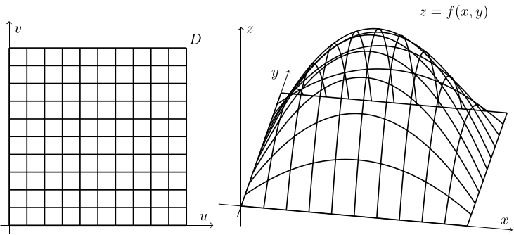
もう一つの典型的なパターンは, 曲線をある直線の周りに回転させて得られる曲面である. 例えば $xy$ 平面上の関数 $y=f(x)$ を, $x$ 軸周りに $1$ 回転させて得られる曲面 $S$ は \[ S = \{(x, y, z) \in\mathbb{R}^3: a\le x\le b,\ y^2+z^2 = f(x)\} \] のように表すことができるが, これは \[ \mathbf{x}(u, v) = \begin{pmatrix} u \cr f(u)\cos v \cr f(u)\sin v \end{pmatrix}, \qquad (u, v)\in [a, b]\times[0, 2\pi] \] という状況に対応している.
それでは適切なパラメータ表示により表すことができる曲面の面積を求める積分について考えよう. 線積分では, 線素 $ds$ が曲線の微小長さであると解釈し, 曲線 \[ C = \{\mathbf{r}(t): a\le t\le b\} \] の長さを \[ L = \int_C ds = \int_a^b|\mathbf{r}'(t)|~dt \] という積分として表していた, ここで $|\mathbf{r}'(t)|$ は (パラメータ $t$ に対する) 局所長であり, 微小な曲線の長さに相当するものであった. これと同様のアイデアに基づき, 曲面の微小面積を表す 面素 $dS$ を用いて, 曲面 \[ S = \{\mathbf{x}(u, v) : (u, v)\in D\} \] の面積を \[ A = \int_S dS = \iint_D ?? ~dudv \] と表したい. 上の積分における被積分関数は, $u$ と $v$ を変数とする微小な面積を表す関数になっているべきである.
ここで, 微小な面積を曲面の 接ベクトル から計算しよう. 以降, 記号の簡単のために二変数関数 $f(u, v)$ に対して \[ f_u = \dfrac{\partial f}{\partial u}(u, v) \] などと表記することにする. 曲面 $C = \{\mathbf{r}(t): a\le t\le b\}$ に対して $\mathbf{r}'(t)$ を接ベクトルと呼ぶことは以前にも説明したことがあるが, パラメータ表示された曲面に対しては \[ \mathbf{x}_u = \begin{pmatrix} x_u \cr y_u \cr z_u \end{pmatrix},\quad \mathbf{x}_v = \begin{pmatrix} x_v \cr y_v \cr z_v \end{pmatrix} \] の $2$ つが $u$, $v$ で表される曲面 $S$ 上における接線の向きを表すベクトルになっている. そこで, これらのベクトルで表される平行四辺形の面積を微小面積として利用することで, 面積を求める積分を求めたい. その際に, 以下を利用すればよい:
$2$ つのベクトル \[ \mathbf{a} = \begin{pmatrix} a_1 \cr a_2 \cr a_3 \end{pmatrix},\quad \mathbf{b} = \begin{pmatrix} b_1 \cr b_2 \cr b_3 \end{pmatrix} \in\mathbb{R}^3 \] に対して, \[ \mathbf{a}\times \mathbf{b} = \begin{pmatrix} a_2b_3 - a_3b_2 \cr a_3b_1 - a_1b_3 \cr a_1b_2 - a_2b_1 \end{pmatrix} \in\mathbb{R}^3 \] を $\mathbf{a}$ と $\mathbf{b}$ の 外積 もしくは クロス積 (cross product) という.
$2$ つのベクトル $\mathbf{a}$, $\mathbf{b}\in\mathbb{R}^3$ の張る ($xyz$ 空間内の) 平行四辺形 \[ \{c_1\mathbf{a} + c_2\mathbf{b}\in\mathbb{R}^3 : 0\le c_1\le 1,\ 0\le c_2\le 1\} \] の面積は $|\mathbf{a}\times\mathbf{b}|$ である.
該当の平行四辺形の面積 $A$ は, $\mathbf{a}$ と $\mathbf{b}$ の面積の $2$ 倍であり, またベクトルで辺が表される三角形の面積は (実は $2$ 次元平面上の三角形と同様に) $2$ つのベクトルのなす角 $\theta$ を用いて表すことができる: \[ \begin{array}{rl} A &= 2\cdot \dfrac{1}{2}|\mathbf{a}||\mathbf{b}|\sin\theta \cr &= \sqrt{|\mathbf{a}|^2|\mathbf{b}|^2-(\mathbf{a}\cdot\mathbf{b})^2} \cr &= \sqrt{(a_1^2 + a_2^2 + a_3^2)(b_1^2 + b_2^2 + b_3^2) - (a_1b_1 + a_2b_2 + a_3b_3)^2} \cr &= \sqrt{(a_2b_3-a_3b_2)^2 + (a_3b_1-a_1b_3)^2 + (a_1b_2-a_2b_1)^2} \cr &= |\mathbf{a}\times \mathbf{b}|. \end{array} \]
これを利用することで, 曲面 \[ S = \{\mathbf{x}(u, v) : (u, v)\in D\} \] の面積を \[ A = \int_S dS = \iint_D |\mathbf{x}_u\times \mathbf{x}_v| ~dudv \] と表すことができる.
曲面 $S$ が関数 $f(x, y)$ を用いて \[ S = \{(x, y, z) : (x, y)\in D,\ z = f(x, y)\} \] と表される場合は, \[ \mathbf{x}(u, v) = \begin{pmatrix} u \cr v \cr f(u, v) \end{pmatrix}, \quad \mathbf{x}_u = \begin{pmatrix} 1 \cr 0 \cr f_x \end{pmatrix}, \quad \mathbf{x}_v = \begin{pmatrix} 0 \cr 1 \cr f_y \end{pmatrix} \] であり, 従って \[ \mathbf{x}_u\times \mathbf{x}_v = \begin{pmatrix} -f_x \cr -f_y \cr 1 \end{pmatrix}, \quad |\mathbf{x}_u\times \mathbf{x}_v| = \sqrt{f_x^2 + f_y^2 + 1} \] である. 適当に記号を取り替えると, 結果的に \[ A = \int_S~dS = \iint_D \sqrt{(f_x(x, y))^2 + (f_y(x, y))^2 + 1}~dxdy \] が得られる.
曲面 $S$ が $xy$ 平面上の関数 $y=f(x)$ を $x$ 軸周りに $1$ 回転させて得られる場合, つまり \[ S = \{(x, y, z) \in\mathbb{R}^3: a\le x\le b,\ y^2+z^2 = f(x)\} \] である場合は, \[ \mathbf{x}(u, v) = \begin{pmatrix} u \cr f(u)\cos v \cr f(u)\sin v \end{pmatrix}, \quad \mathbf{x}_u = \begin{pmatrix} 1 \cr f'(u)\cos v \cr f'(u)\sin v \end{pmatrix}, \quad \mathbf{x}_v = \begin{pmatrix} 0 \cr -f(u)\sin v \cr f(u)\cos v \end{pmatrix} \qquad (u, v)\in [a, b]\times[0, 2\pi] \] であり, 従って \[ \mathbf{x}_u\times \mathbf{x}_v = \begin{pmatrix} f'(u)f(u) \cr -f(u)\cos v \cr -f(u)\sin v \end{pmatrix},\quad |\mathbf{x}_u\times \mathbf{x}_v| = \begin{pmatrix} |f(u)|\sqrt{1+f'(u)^2} \end{pmatrix} \] である. 適当に記号を取り替えると, 結果的に \[ A = \int_S~dS = \iint_{[a, b]\times[0, 2\pi]}|f(r)|\sqrt{1+f'(r)^2}~drd\theta = 2\pi \int_a^b |f(x)|\sqrt{1+f'(x)^2}~dx \] が得られる.
これらの結果を定理としてまとめておこう:
適切なパラメータ表示により表される曲面 \[ S = \{\mathbf{x}(u, v) : (u, v)\in D\} \] の面積は \[ A = \int_S dS = \iint_D |\mathbf{x}_u\times \mathbf{x}_v| ~dudv \] と計算できる. 特に,
- 曲面 $S$ が関数 $f(x, y)$ を用いて \[ S = \{(x, y, z) : (x, y)\in D,\ z = f(x, y)\} \] と表される場合は, \[ A = \iint_D \sqrt{(f_x(x, y))^2 + (f_y(x, y))^2 + 1}~dxdy \] である.
- 曲面 $S$ が $xy$ 平面上の関数 $y=f(x)$ を $x$ 軸周りに $1$ 回転させて得られる場合, つまり \[ S = \{(x, y, z) \in\mathbb{R}^3: a\le x\le b,\ y^2+z^2 = f(x)\} \] と表される場合は, \[ A = 2\pi \int_a^b |f(x)|\sqrt{1+f'(x)^2}~dx \] である.
$\mathbb{R}^3$ 内の半径が $R\gt 0$ である球面の表面積が $4\pi R^2$ であることを証明せよ.
球面の表面積はさまざまな方法で計算できるが, ここでは上の定理を利用してみよう. 半径 $R$ の球面は, \[ y = f(x) = \sqrt{R^2 - x^2} \quad (-R\le x\le R) \] を $x$ 軸周りに $1$ 回転させて得られることから, その表面積は \[ \begin{array}{rl} A &= 2\pi \displaystyle\int_{-R}^R |f(x)|\sqrt{1+f'(x)^2}~dx\cr &= 2\pi \displaystyle\int_{-R}^R \sqrt{R^2-x^2}\sqrt{1+\left(\dfrac{-x}{\sqrt{R^2-x^2}}\right)^2}~dx \cr &= 2\pi \displaystyle\int_{-R}^R \sqrt{R^2 - x^2 + x^2}~dx \cr &= 2\pi R\displaystyle\int_{-R}^R~dx = 4\pi R^2. \end{array} \]
線積分の場合と同様に, 曲面上のスカラー値関数の面積分が可能である (やはり線積分と同様にベクトル値関数の面積分も可能だが, この資料では言及しない):
適切な曲面 \[ S = \{\mathbf{x}(u, v) : (u, v)\in D\} \] 上で定義された関数 $f(\mathbf{x})$ について, \[ \iint_S f(\mathbf{x})~dS = \iint_Df(\mathbf{x}(u, v))|\mathbf{x}_u\times\mathbf{x}_v|~dudv \] を曲面 $S$ 上での 面積分 (surface integral) という.
- スカラー値関数の線積分は, 曲面の面積と対応付けることができたが, 面積分を何かの立体の体積と対応付けることは一般には困難である. つまりこの積分は "累積量, 蓄積量としての積分" と解釈する他ない.
- 曲面全体を (単独の) パラメータ表示により表すことができない場合, 曲面をいくつかの曲面たちに分割し, それぞれの上で面積分を計算したものを足し合わせれば良い.
- スカラー値関数の面積分は (線積分の場合と同様に) 曲面のパラメータ表示の方法にも "曲面の向き" にも依存しないが, ここではこれ以上の説明は控える.